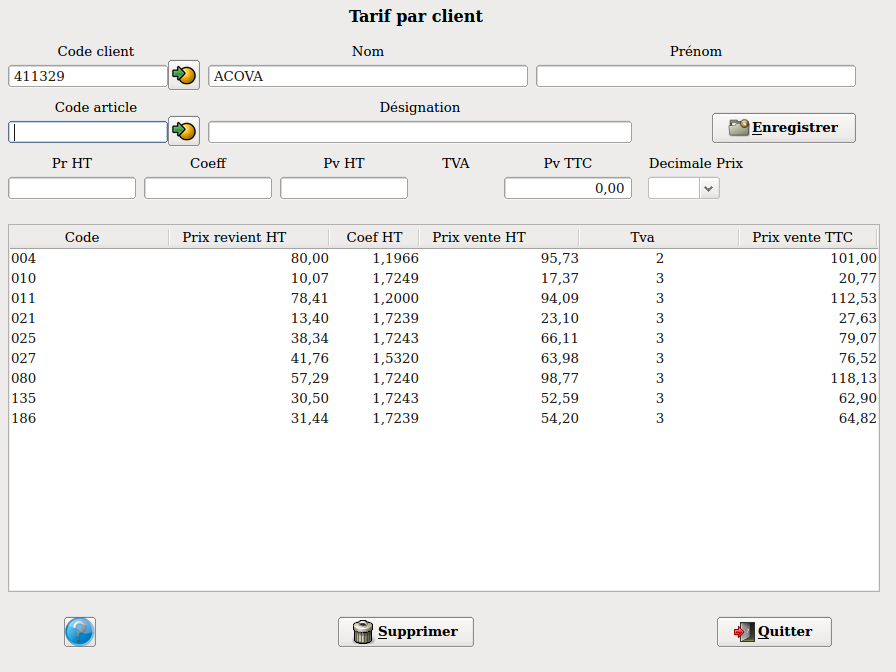

~ Comptabilité et Facturation Laurux ~

~ Comptabilité et Facturation Laurux ~ |
|
|
|
Les tarifs par client et les tarifs par type client sont accessibles
soit à partir des tables soit des fiches produits à l'aide des boutons
had hoc dans l'onglet "Remises"
Les tarifs par client et les tarifs par type client se différencient
des remises client et des remises par type client par leur mode
de calcul.
Les tarifs determinent un prix de vente HT à partir du prix de revient
de la fiche article et d'un coefficient de vente saisi dans la table
des tarifs.
Les tarifs par client et les tarifs par type client ne sont pas
visibles sur les factures.
Les remises par client ou par type client déterminent une remise qui
s'appliquera sur le prix brut d'un produit afin de calculer un nouveau
prix net HT.
Les remises s'impriment sur la facture.

Les tarifs par client s'utilisent afin de déterminer pour chaque
client concerné un coefficient de vente. Ce coefficient sera appliqué
au prix de revient du produit et determinera un nouveau prix de vente
propre au client saisi.
Ces tarifs par client, utilisés en facturation s'appliqueront sur
l'ensemble des produits saisis sauf si la facture n'est pas une facture
rétrocession.
Les tarifs par client sont priotaires sur les tarifs par types client.
Les tarifs client s'appliqueront sur les produits en promotion
uniquement si le prix promo est supérieur au tarif client. Dans le cas
contraire c'est donc le prix promo qui s'appliquera.
Une info bulle vous préviendra lors d'une saisie d'article faisant
l'objet d'un tarif client.
Cet écran vous permet de saisir les tarifs produits pour chaque
client séléctionné.
1- Saisir le client.
2- Saisir le code des produits ainsi que les coefficients de vente.
Vous pouvez utiliser 4 décimales.
NB : On peut soit saisir le coefficient de vente, soit saisir le prix de vente HT, soit saisir le prix de vente TTC.
Les tarifs par type client s'utilisent afin de déterminer pour
chaque
type client concerné un coefficient de vente. Ce coefficient sera
appliqué
au prix de revient du produit et determinera un nouveau prix de vente
propre au type client saisi.
Bien entendu, il faudra en premier lieu créer les types clients par
la table des types clients puis aller dans les fiches des clients
concernés pour renseigner leur type client.
Rappel : Les types clients sont aussi utilisés pour les remises par
type client.
Ces tarifs par type client, utilisés en facturation s'appliqueront
sur
l'ensemble des produits saisis sauf si la facture n'est pas une facture
rétrocession.
Les tarifs par client sont priotaires sur les tarifs par types client.
Les tarifs par type client s'appliqueront sur les produits en promotion
uniquement si le prix promo est supérieur au tarif client. Dans le cas
contraire c'est donc le prix promo qui s'appliquera.
Une info bulle vous préviendra lors d'une saisie d'article faisant
l'objet d'un tarif par type client.
Cet écran vous permet de saisir les tarifs produits pour chaque
type client séléctionné.
1- Saisir le type client.
2- Saisir le code des produits ainsi que les coefficients de vente.
Vous pouvez utiliser 4 décimales.
NB : On peut soit saisir le coefficient de vente, soit saisir le prix de vente HT, soit saisir le prix de vente TTC.
----------------------------------------------------------------------------------------------------------------------